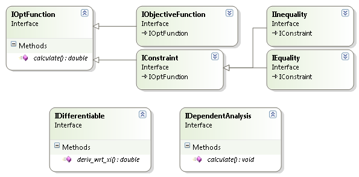

This project is maintained by DesignEngrLab
An optimization problem is described by:
The number of design variables can be provided in a number of ways. Two common ways are to simply let OOOT infer this value at run time when the Run statement is invoked. There are three overloads to the main run function:
double Run(out double[] xStar)
double Run(out double[] xStar, double[] xInit)
double Run(out double[] xStar, int NumberOfVariables)
The last one provides the number directly and the middle one provides a starting point which can be used for this. But, if the first statement is used, it is possible an error will be produced if the number is not known. This can also be provided by creating a DesignSpaceDescription object which provides clear data on the limitations of each variable. For many of the continuous optimization methods, this is not needed, but it is crucial component of the discrete methods. The DesignSpaceDescription is essentially a list of Variable Descriptors where each variable descriptor states:
One can add objective functions, and constraints directly to an optimization method, by simply calling the abstractOptMethod.Add(…) function. Example:
var g1 = new polynomialInequality();
g1.Add("-x1");
g1.Add("x2"); /* this inequality translates to x2 - x1 < 0 */
pd.Add(g1); /* of simply x1 > x2. */
Internally, a function detects if this object inherits from one of the interfaces defined in OOOT. These interfaces are simple and the entirety of the Interfaces.cs file is shown here:
public interface IDifferentiable
{
double deriv_wrt_xi(double[] x, int i);
}
public interface IOptFunction
{
double calculate(double[] x);
}
public interface IObjectiveFunction : IOptFunction { }
public interface IConstraint : IOptFunction{}
public interface IEquality : IConstraint { }
public interface IInequality : IConstraint { }
public interface IDependentAnalysis
{
void calculate(double[] x);
}
In early October 2010, I converted from an abstract class approach to this interface approach to add more flexibility to the notion of working within larger applications. Since one can have a class inherit from any number of interfaces, all that you need to do is add the interface name to your classes and overload one or two functions. Internally, the toolbox keeps a list of these functions and invokes their “calculate” function when it needs a value. It is also ideal for to inherit from IDifferentiable as well if the analytical derivative can be found. Please see the example projects for details.